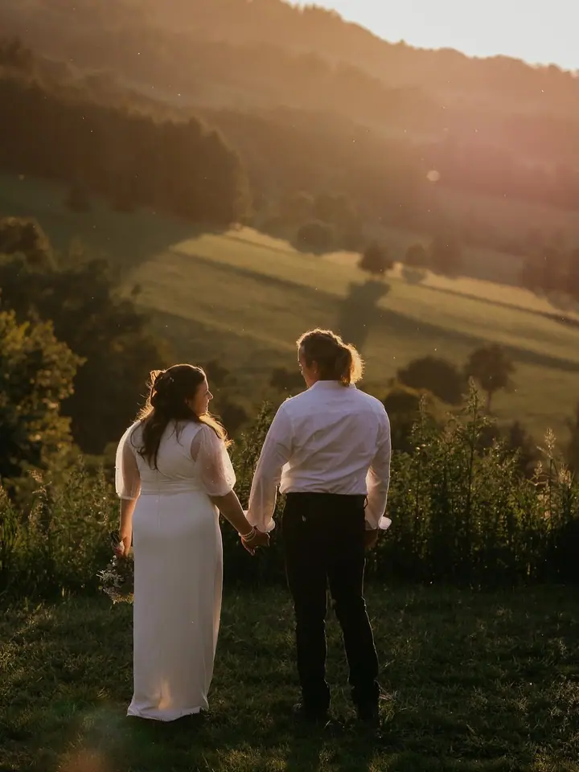
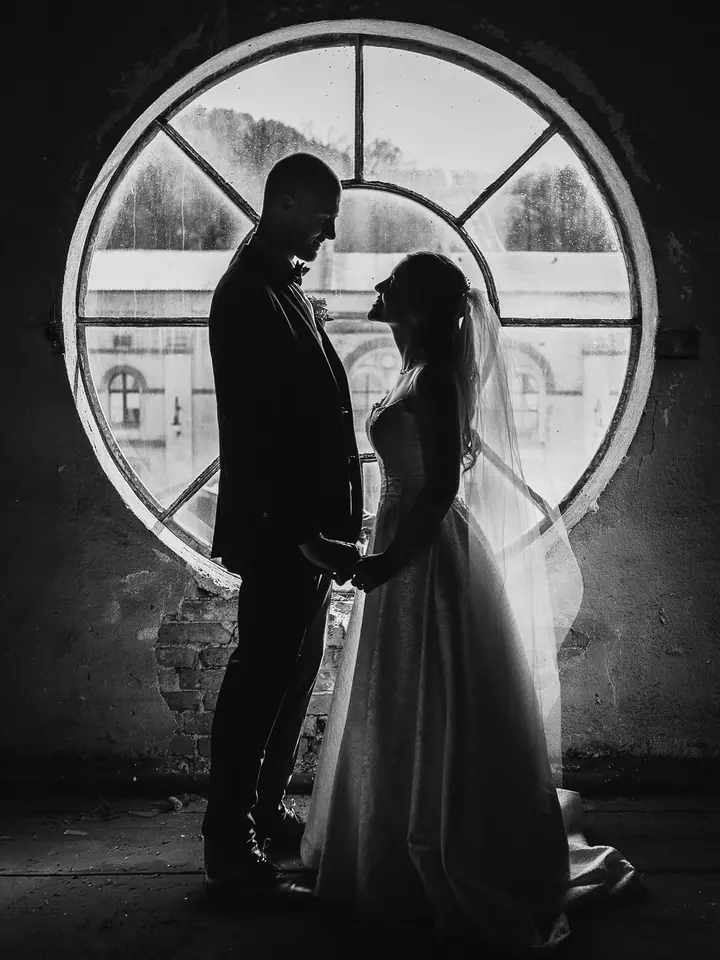
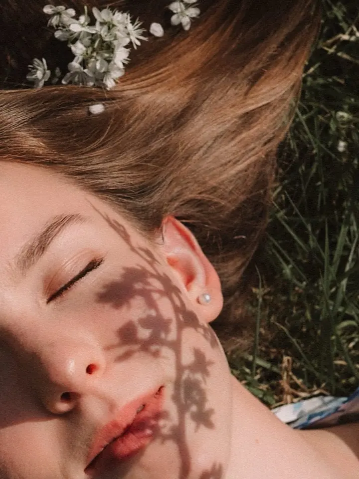

Váš den
Svatební focení od 7 500 Kč s výběrem ze tří balíčků. Fotky dostanete v digitální i tištěné podobě, k tomu průvodce svatebním focením a předsvatební focení.

Jmenuji se Martina Kominková a fotím na Semilsku a v okolí. Nejvíc mě baví pohyb, smích a chvíle, kdy se uvolníte a zapomenete na foťák. Z obyčejných momentů pak vznikaj…
Rezervovat termínMiluju přirozenost. Fotím momenty tak, jak se opravdu dějí, s lehkostí, citem a bez zbytečného nastavování. Nečekám na dokonalost, čekám na vás. Až se uvolníte a až se z vás stane příběh. Mám ráda, když vlasy lítají ve větru, šaty se vlní s každým krokem a vy se smějete sami sobě.


Bydlím v Semilech, vystudovala jsem učitelství pro 1. stupeň a od roku 2021 jsem máma. Rychle se nudím, a proto se snažím, aby každé focení bylo zábavné, živé a co nejvíc jedinečné. Nebojím se výzev, ráda zkouším nové věci, a i když to tak často nevypadá, jsem spíš introvert.
Věřím, že s fotografkou si musíte sednout lidsky, abyste se při focení cítili příjemně. Proto si vždycky dopředu popovídáme o tom, co chcete. Moje fotografie byly oceněny i v mezinárodní soutěži 35AWARDS, ale nejvíc mě těší, když si z focení odnesete i zážitek, na který budete rádi vzpomínat.
Co fotím
Svatební focení od 7 500 Kč s výběrem ze tří balíčků. Fotky dostanete v digitální i tištěné podobě, k tomu průvodce svatebním focením a předsvatební focení.
Párové focení v přírodě, kde se smějete, objímáte, tančíte nebo jdete bosí přes louku. Krátký příběh za 3 200 Kč obsahuje 15 fotek v barevné i černobílé verzi.
Rodinné focení venku nebo v pohodlí vašeho domova. V Dlouhém příběhu za 5 000 Kč dostanete všechny povedené fotky (cca 50 až 100) ve vlastní webové galerii.
Jemné těhotenské focení v přírodě, bez strojených póz. Nastávajícím maminkám můžu na focení zapůjčit oblečení.
Postup
Vyplňte formulář nebo mi napište e-mail. Napište, o jaký balíček a typ focení máte zájem, u svatby i místo a čas.
Společně vybereme termín a probereme barvy oblečení i celkový styling. Maminkám a miminkům můžu oblečení zapůjčit.
Fotíme v přírodě nebo u vás doma, bez strojených póz. Chci, abyste si focení hlavně užili.
Fotky si vyberete z online galerie a dostanete je nejpozději do 14 dní, většinou dřív. Svatební fotky předávám na dřevěném USB disku a část i vytištěnou.
Otázky
Nejpozději do 14 dní, většinou je to o něco kratší. Fotky posílám v elektronické podobě přes Úschovnu.
Co nejjednodušší oblečení bez křiklavých barev, výrazných vzorů a nápisů. Ve skupině se zkuste barevně sladit a volte nadčasové kousky. Styling spolu můžeme probrat při domlouvání termínu.
Při velkém dešti, větru nebo hustém sněžení termín přesuneme. Když je jen pod mrakem nebo mlha, fotíme dál, takové počasí umí fotku ozvláštnit.
Platíte hned po focení na místě v hotovosti a dostanete doklad. Pokud si vyberete víc fotek, než obsahuje balíček, pošlu vám fakturu na doplatek.